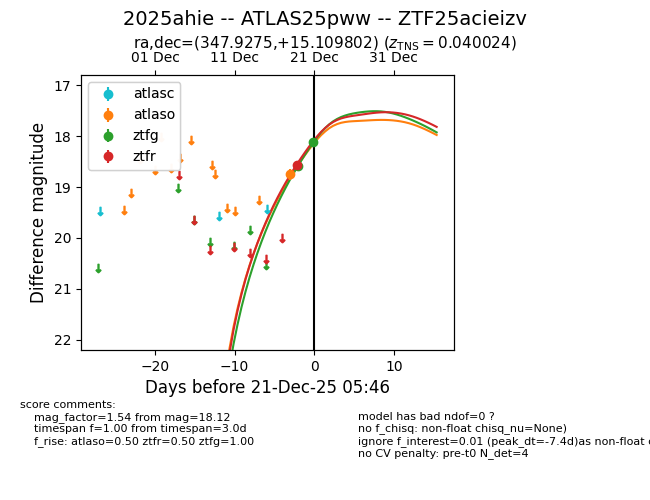
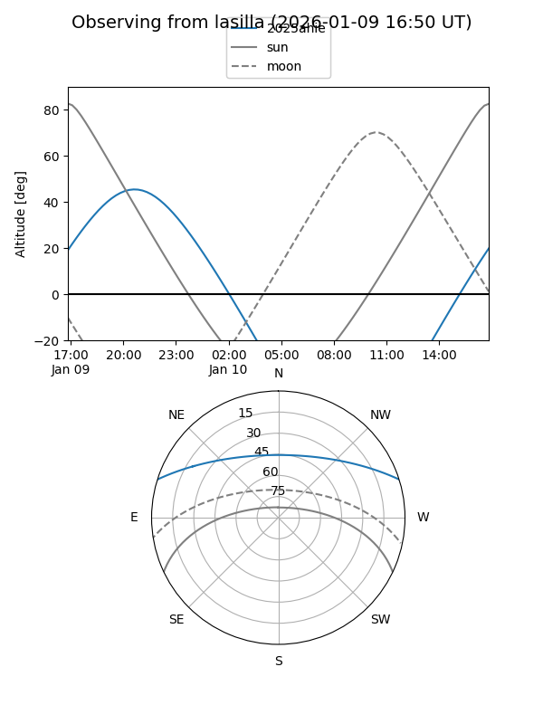
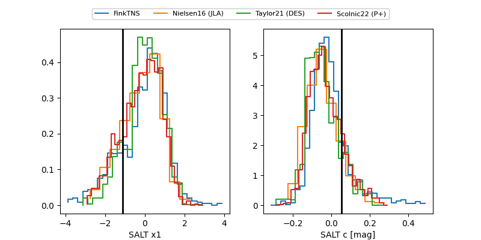

2025ahie
Target 2025ahie at 2025-12-19 11:20
Aliases and brokers:
FINK: fink-portal.org/ZTF25acieizv
Lasair: lasair-ztf.lsst.ac.uk/objects/ZTF25acieizv
ALeRCE: alerce.online/object/ZTF25acieizv
TNS: wis-tns.org/object/2025ahie
YSE: ziggy.ucolick.org/yse/transient_detail/2025ahie
alt names
ZTF25acieizv (ztf,fink_ztf)
2025ahie (tns,yse)
ATLAS25pww (atlas)
Coordinates:
equatorial (ra, dec) = 347.9275,+15.10980
equatorial (HMS+DMS) = 23:11:42.59,+15:06:35.29
galactic (l, b) = (90.1193,-41.32172)
Flags:
confirmed ia
Photometry:
last ztfg=18.59
1 ztfg detections
Lightcurve

Visibility


Additional plots
